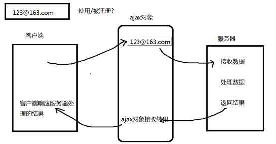

有关Ajax的理解：
它其实就是存在在客户端与服务器之间的一个东西，它可以使你向服务器调取数据的时候，只进行你想要的那部分的数据的刷新，其余的不刷新，很大程度上减少了数据的交互。这样就存在了一个问题是两种传递的区别需要多加注意（个人理解两种传递在时间上比的话，还是get传递好，因为POST还得先去和服务器打个招呼，然后再一次才进行传值）。理解了Ajax的工作原理，再进行其步骤的代码的操作就比较简单了。
一、Ajax含义：
当向服务器提交少量数据时 ， 使用ajax实现，可以提高程序的执行效率 ， 提高用户体验 、 减少带宽。
作用 ： 页面无刷新 (局部刷新)
二、Ajax的工作原理：
页面发起请求，会将请求发送给浏览器内核中的Ajax引擎，Ajax引擎会提交请求到服务器端，在这段时间里，客户端可以任意进行任意操作，直到服务器端将数据返回给Ajax引擎后，会触发你设置的事件，从而执行自定义的js逻辑代码完成某种页面 功能。

三、异步与同步的区别：
异步是指同时的分开执行的（现实生活中的同步），是非堵塞的模式的；
同步是指按顺序执行的（现实生活中的异步），是堵塞模式的；
四、Ajax的操作步骤：
1、创建ajax对象
var xhr = null;
if( XMLHttpRequest ){
xhr = new XMLHttpRequest();
}else{
xhr = new ActiveXObject("Microsoft.XMLHTTP");
}
2、建立和服务器的连接
open( "get/post" , 请求文件路径 url , 布尔值 )
第三个参数 ： 表示同步 / 异步 true 默认
get和post区别 ：
get 路径传值 数据对用户是可见的 传递的数据量少 安全性低 便于调试
post 非路径传值 数据对用户是不可见的 传递的数据量大 安全性高
3、发送请求
send()
4、服务器响应客户端的结果 （返回结果）
使用状态改变事件 onreadystatechange 处理服务器返回的结果
状态值 readyState
0 请求还没有初始化 还没有open()
1 请求已发送 服务器还没有开始处理
2 服务器接收请求后 没有处理数据
3 开始处理请求 部分请求已完成
4 所有请求全部完成
状态码 ：status
200 交易成功
404 文件路径错误
500 服务器错误
400 服务器语法错误
<script>
btn.onclick = function(){
//第一步 ： 创建ajax对象
//var xhr = new XMLHttpRequest();
//var xhr = new ActiveXObject("Microsoft.XMLHTTP");
var xhr = null;
if( window.XMLHttpRequest ){
xhr = new XMLHttpRequest();
}else{
xhr = new ActiveXObject("Microsoft.XMLHTTP");
}
//第二步 ： 建立和服务器的连接
xhr.open( "GET" , "data.php?uname="+encodeURI("名字")+"&upwd=123" );
//第三步 ：发送请求
xhr.send();
//第四步 ： 服务器处理请求并返回结果
xhr.onreadystatechange = function(){
if( xhr.readyState == 4 && xhr.status == 200 ){
alert( xhr.responseText );
}
}
/*setTimeout( function(){
alert( xhr.responseText );
},1000 )*/
}
</script>
服务器响应客户端请求时需要注意的两个问题 ：
1、状态值判断
2、状态码的判断
五、解决ie的中文编码 ：
当向服务器传递中文时，需要通过 encodeURI()方法 对中文进行编码处理
六、ajax中的缓存：
当多次请求服务器上的同一个文件时，如果路径不变，后面的多次请求直接从浏览器的缓存上获取数据，
导致 ：当服务器的数据发生更改时，无法拿到服务器更新后的数据
解决方案一 ：
在路径上加一个可变的参数
url ? id = Math.random()
url ? id = new Date().getTime()
解决方案二 ： 比较服务器上文件的最后修改时间
当使用ajax请求服务器数据时，会将服务器文件最后一次的修改时间发送到服务器上
比较服务器文件两次的修改时间
如果相等 直接从浏览器的缓存上获取数据
如果不相等， 先删除浏览器缓存的数据 在获取服务器上更新后的数据
xhr.setRequestHeader("if-modified-since","0"); 设置文件修改时间
七、 字符串和对象的转换问题
原生ajax获取服务器的数据 是字符串
字符串转对象 ： JSON.parse()
对象转字符串 ： JSON.stringify() cookie中使用
八、Jquery的ajax技术：
jquery是一个优秀的js框架，自然对js原生的ajax进行了封装，封装后的ajax的操作方法更简洁，功能更强大，与ajax操作相关的jquery方法有如下几种，但开发中 经常使用的有三种：
1、$.get(url, [data], [callback], [type])请求行
2、$.post(url, [data], [callback], [type])请求体
其中：
url：代表请求的服务器端地址
data：代表请求服务器端的数据、请求参数（可以是key=value形式也可以是json格式）
callback：表示服务器端成功响应所触发的回调函数（只有正常成功返回才执行）
type：表示服务器端回调函数返回的数据类型（jquery会根据指定的类型自动类型转换）
常用的返回类型：text、json、html等
3、$.ajax( { option1:value1,option2:value2... } );
常用的option有如下：
async：是否异步，默认是true代表异步
data：发送到服务器的参数，建议使用json格式
dataType：服务器端返回的数据类型，常用text和json
success：成功响应执行的函数，对应的类型是function类型
type：请求方式，POST/GET
url：请求服务器端地址